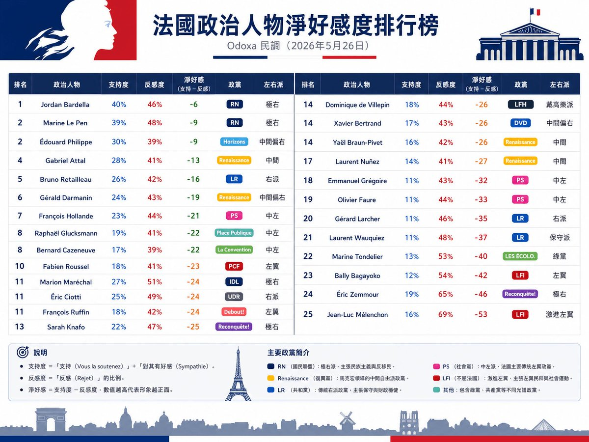

根據2026年Odoxa政治人物淨好感度的民調分析🇫🇷🗼，法國極右翼政黨國民聯盟的勒龐作為該黨的總統候選人位列榜單第二(第一名是其副手巴德拉)，中間派的菲利普與阿塔爾緊隨其後，而來自左翼陣營的格魯斯克曼與吕芬也分別位列榜單第8與第11，不可小覷
唯一尷尬的是來自法國極左翼政黨「不屈法國」的候選人讓-呂克·梅朗雄，其雖然在左翼選民中有49%的支持率(來自Odoxa的民調)，是左翼候選人在左翼選民中支持率最高的，但其卻是「法國人最厭惡的政治家」。Ifop民調的數據顯示，如果他在2027總統大選第二輪碰上勒龐恐怕只會獲得30%的選票，是所有對上勒龐的候選人中最低的。
只能說激進左翼的選舉策略本身就是一個大問題：一場選舉並不是比誰更能鞏固基本盤，而是比誰更有能力建立跨陣營、多數聯盟。 激進左翼始終把「意識形態的純粹性」放在「擴大社會支持面」之前，那麼它就可能反覆陷入同樣的困境：第一輪成功鞏固自己的核心支持者，第二輪卻因無法爭取更多選民而失利👋
唯一尷尬的是來自法國極左翼政黨「不屈法國」的候選人讓-呂克·梅朗雄，其雖然在左翼選民中有49%的支持率(來自Odoxa的民調)，是左翼候選人在左翼選民中支持率最高的，但其卻是「法國人最厭惡的政治家」。Ifop民調的數據顯示，如果他在2027總統大選第二輪碰上勒龐恐怕只會獲得30%的選票，是所有對上勒龐的候選人中最低的。
只能說激進左翼的選舉策略本身就是一個大問題：一場選舉並不是比誰更能鞏固基本盤，而是比誰更有能力建立跨陣營、多數聯盟。 激進左翼始終把「意識形態的純粹性」放在「擴大社會支持面」之前，那麼它就可能反覆陷入同樣的困境：第一輪成功鞏固自己的核心支持者，第二輪卻因無法爭取更多選民而失利👋
